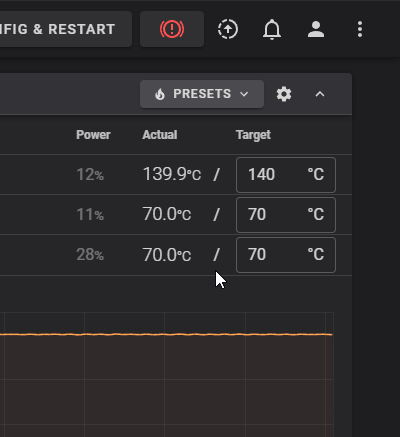

Automated Backups
There are a couple different methods for automating backups. You can choose to use one, all of them or none its up to you.
Backup on boot¶
- Create the service file in systemd
- Copy and paste the below text (be sure to uncomment the correct
after=andwants=lines based on if your linux install is using network manager)
[Unit] Description=Klipper Backup On-boot Service #Uncomment below lines if using network manager #After=NetworkManager-wait-online.service #Wants=NetworkManager-wait-online.service #Uncomment below lines if not using network manager #After=network-online.target #Wants=network-online.target [Service] User={replace with your username} Type=oneshot ExecStart=/usr/bin/env bash -c "/usr/bin/env bash $HOME/klipper-backup/script.sh -c \"New Backup on boot - $(date +\"%%x - %%X\")\"" [Install] WantedBy=default.target - Reload the service daemon, enable the service and start the service
Cron¶
You can also use cron jobs for scheduling backups.
Note
While there is a @reboot option for cron jobs, creating the service from above is a better approach for backups on boot. The service can be set to wait for your network to be online before attemping a backup where the cronjob will not and you will need to add a sleep command based on how long it takes for the network to become available.
-
Edit the crontab file using:
Info
If it's your first time running the command you will be asked which editor you would like to use, nano is the easiest
-
Once the editor is open, at the very bottom of the file add the line:
This tells cron to run the backup script every 4 hours. You can find other cron examples here: https://crontab.guru/examples.html
Note
If you are running a distro that may not natively include cron on its base packages you can see the following alternative method for using systemd for time backups
Backup on file changes¶
The following service relies on the inotify-tools package. To install the package run sudo apt-get install inotify-tools in your terminal.
Please check with inotifywait -h if you are using the latest release 4.25.9.0. If this is not the case or if you encounter any problems (error messages, service not running correctly) or an update with apt does not work, follow these instructions:
Expand to show alternate inotify installation
- Create the service file in systemd
- Copy and paste the below text (be sure to uncomment the correct
after=andwants=lines based on if your linux install is using network manager)
[Unit] Description=Klipper Backup Filewatch Service #Uncomment below lines if using network manager #After=NetworkManager-wait-online.service #Wants=NetworkManager-wait-online.service #Uncomment below lines if not using network manager #After=network-online.target #Wants=network-online.target [Service] User={replace with your username} Type=simple ExecStart=/usr/bin/env bash -c '"$HOME/klipper-backup/utils/filewatch.sh"' [Install] WantedBy=default.target -
Reload the service daemon, enable the service and start the service
sudo systemctl daemon-reload sudo systemctl enable klipper-backup-filewatch.service sudo systemctl start klipper-backup-filewatch.serviceNote
When making significant edits you may want to stop the service. You can do so in the service manager of Fluidd/Mainsail. Below is an example within Fluidd of where to find the service manager.

How do I deactivate systemd services?¶
Since the above mentioned procedures Backup on boot and Backup on file changes are systemd services, deactivating them is just as simple as following: